Stateless byte-range transport
Built for remote bytes.
Exact byte ranges from local disks, HTTP, S3, GCS, Azure and Hugging Face, merged, fetched in parallel and pinned to one version of each object.
find_package(karu CONFIG REQUIRED)

karuStateless byte-range transport
Exact byte ranges from local disks, HTTP, S3, GCS, Azure and Hugging Face, merged, fetched in parallel and pinned to one version of each object.
find_package(karu CONFIG REQUIRED)